Interiér vily v Herolticích
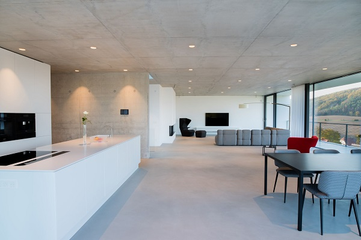
Podíleli jsme se na interiéru vily v Herolticích podle návrhu architekta Martina Klimeckého. Vila získala v roce 2021 Českou cenu za architekturu.
Více o realizaci v Herolticích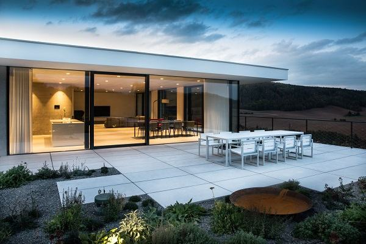
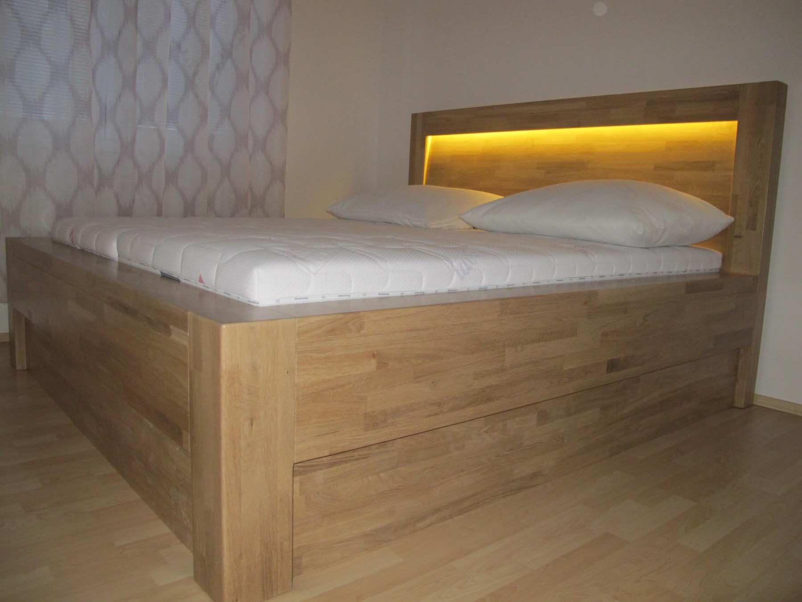

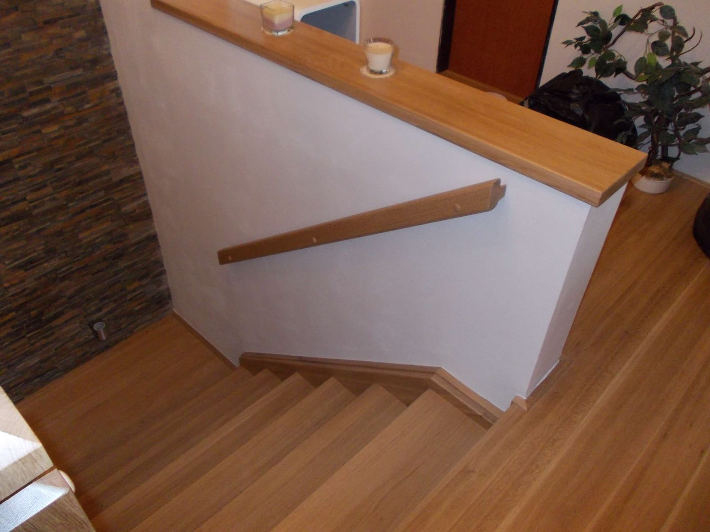

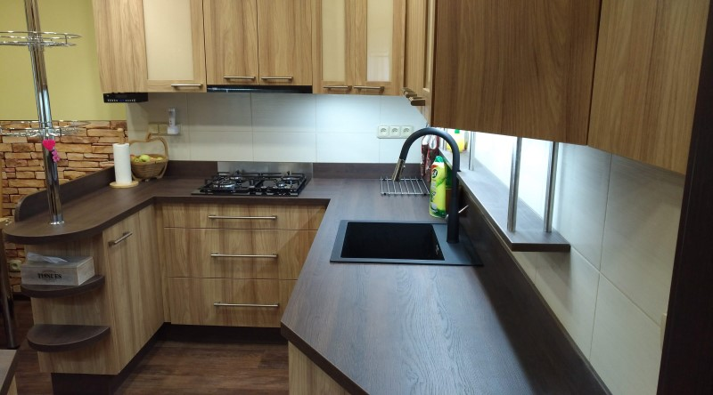
Brno-Řečkovice — od roku 1994
Nábytek na míru z brněnské dílny
Vyrábíme kuchyně, vestavěné skříně, schodiště i vybavení celých pokojů. Nábytek u vás zaměříme a po dokončení také namontujeme.
Pracujeme s masivem, dýhou i laminem. Materiál a provedení s vámi vybereme podle toho, kde a jak budete nábytek používat.
Vyrobíme kuchyňskou linku podle rozměrů místnosti, osadíme pracovní desku a zabudujeme spotřebiče.
Skříň navrhneme do výklenku, pod šikminu i přes celou stěnu. Společně vybereme uspořádání polic, zásuvek a šatních tyčí.
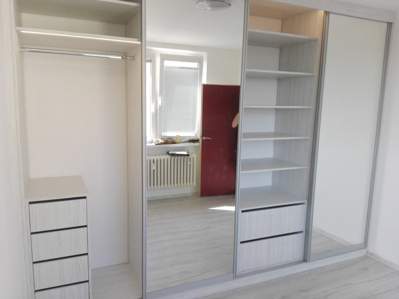
Vyrábíme postele z masivu, noční stolky i šatní skříně. Pod postelí můžeme vytvořit úložný prostor.
Vyrábíme samonosná dřevěná schodiště i obklady stávajících schodů. Součástí zakázky může být také zábradlí.
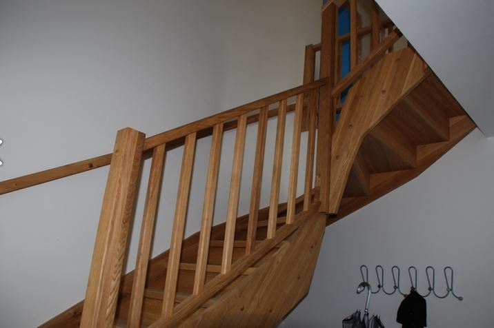
Podle šířky chodby navrhneme předsíňovou sestavu s místem na kabáty, boty i zrcadlo.

Patrové postele, psací stoly a úložné skříně navrhneme společně tak, aby v pokoji zbylo místo na hraní.
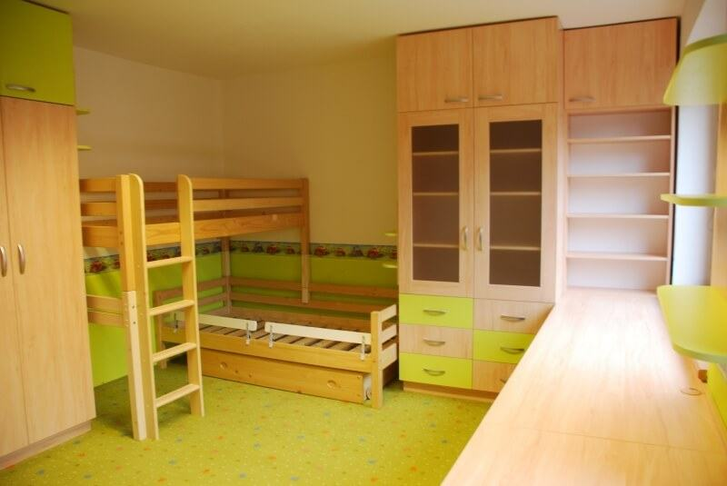
Vyrábíme jídelní a pracovní stoly i vybavení kanceláří a zasedacích místností.
Vyrábíme dveře, posuvné stěny, dřevěné obklady a obložky. Odstín sladíme s ostatním dřevem v interiéru.
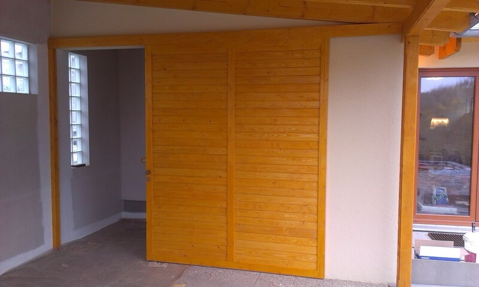
Na zahrady a terasy vyrábíme pergoly, dřevěné ploty, zahradní nábytek i dětské domečky.
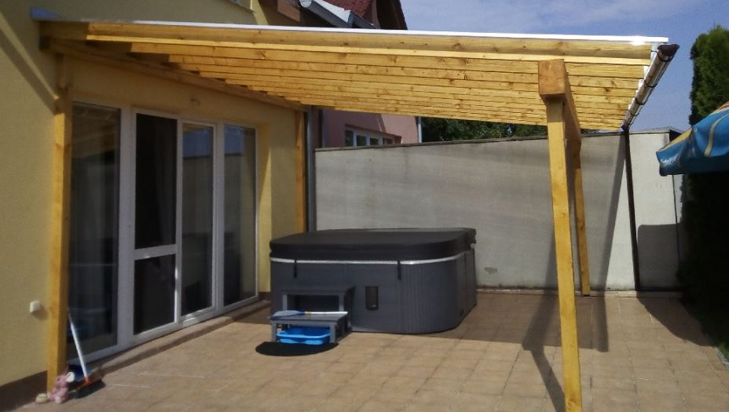

Podíleli jsme se na interiéru vily v Herolticích podle návrhu architekta Martina Klimeckého. Vila získala v roce 2021 Českou cenu za architekturu.
Více o realizaci v Herolticích
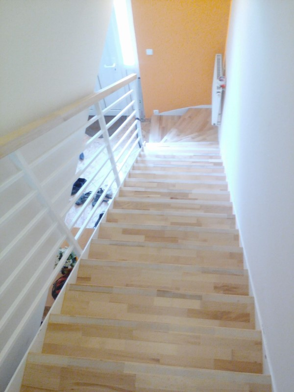
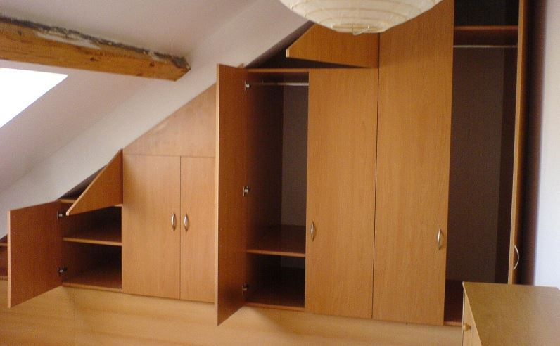

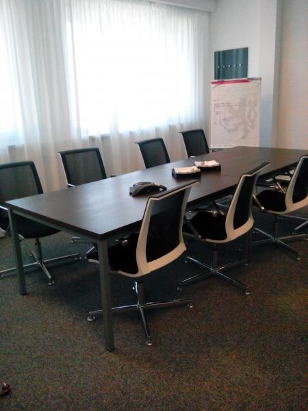
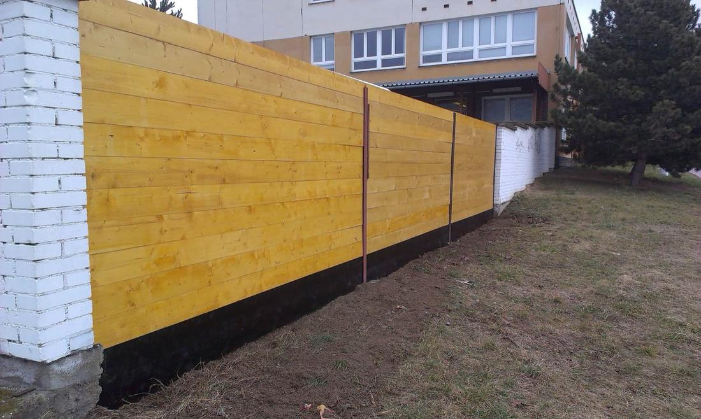

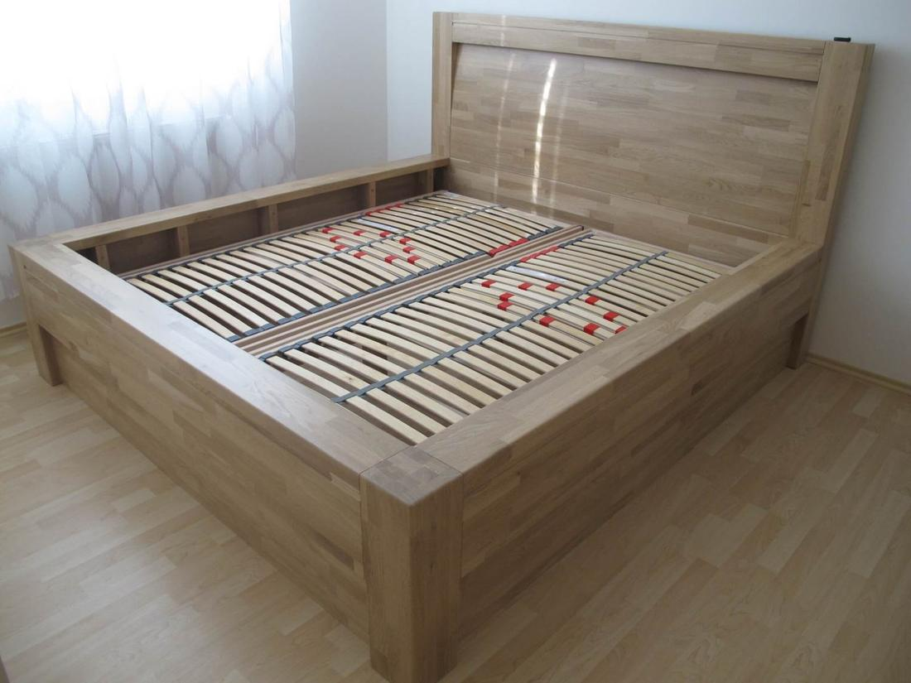
Máte podobný nápad?
Poptat zakázku32let v provozu

Jmenuji se Jiří Mareček, jsem vyučený stolař a nábytek na zakázku vyrábím od roku 1994. V dílně v Brně-Řečkovicích vám ukážu vzorky materiálů. Můžeme vedle sebe porovnat dekory a vybrat odstín, který se hodí k vaší podlaze nebo stávajícímu nábytku.
Každý den u nás řežeme, hoblujeme, brousíme, dlabeme, čepujeme, klížíme a lakujeme. Zvládneme i frézování a další truhlářské techniky, takže vyrobíme prakticky cokoli ze dřeva.
Více o nás a o dílně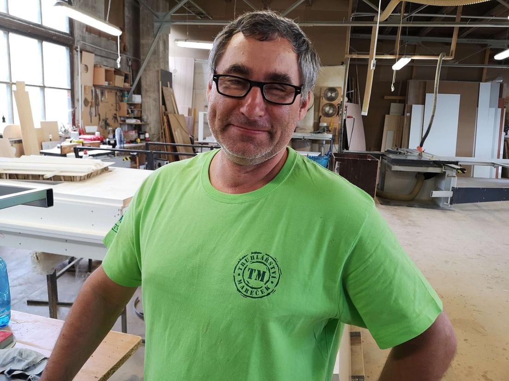
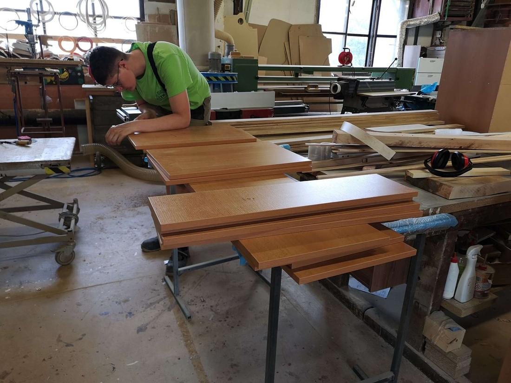

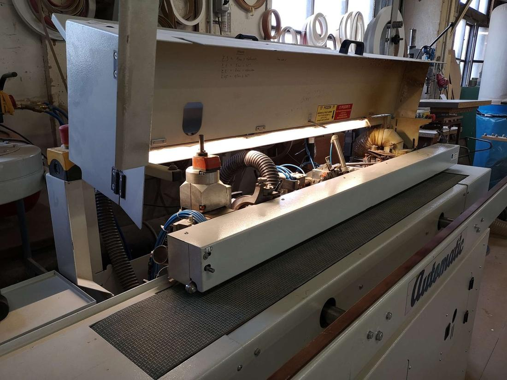


Portál Živéfirmy.cz nám udělil ocenění Spolehlivá firma každý rok od roku 2013 do roku 2025.
 2015
2015 2017
2017 2018
2018 2019
2019 2020
2020 2022
2022 2025
2025Vila v Herolticích od Ing. arch. Martina Klimeckého získala Českou cenu za architekturu 2021. Na jejím interiéru jsme se podíleli.
Realizace vilyServer iDNES.cz oslovil Jiřího Marečka jako odborníka na zpracování dřeva k molu na Brněnské přehradě, ze kterého prkna pouštěla smůlu.
Článek na iDNES.czZdravím Vás,
moc děkuji za precizní výrobu nábytku, moc krásná práce, naprostá spokojenost, chválím i kluky šikovný. Děkuji.


Řeknete nám, co potřebujete. Domluvíme se na zaměření prostoru a výběru materiálu.
Podle rozměrů, materiálu a provedení připravíme návrh a cenovou nabídku.
Po schválení ceny a zaplacení zálohy na materiál začneme s výrobou.
Hotový nábytek přivezeme, smontujeme a předáme. Doplatek se hradí při předání.
U běžné zakázky doporučujeme ozvat se přibližně jeden až dva měsíce předem. Termín dodání potvrdíme podle rozsahu práce a dostupnosti materiálu.
Nejčastěji po Brně a okolí přibližně do 100 km. Vzdálenější zakázky řešíme po domluvě.
Ano, najdete nás na Palackého třídě 1771/178 v Brně-Řečkovicích. Na místě si můžete prohlédnout vzorníky a zaparkovat v areálu.
Spolupracujeme s interiérovým architektem, kterého můžeme přizvat k návrhu.
Ano. Pošlete nám dokumentaci nebo vizualizace od designéra či architekta a podle nich nábytek vyrobíme.
Cenu můžeme probrat telefonicky, e-mailem i osobně. Podle rozsahu, materiálu a termínu spočítáme spotřebu materiálu a pracnost a předložíme kalkulaci. Vyrábět začneme až po jejím schválení.
Fakturou i hotově, podle dohody. Firmy a instituce obvykle platí na fakturu, soukromí zákazníci většinou hotově. U každé zakázky se platí záloha na materiál, doplatek při předání.
Ano, výrobu bereme jako kompletní službu. U kuchyní, skříní a dalších sestav nábytek sami přivezeme a smontujeme.
Co si chcete nechat vyrobit? Napište nám, kam nábytek přijde, jaké má mít přibližné rozměry a kdy ho potřebujete.
+420 777 691 154 jiri@truhlarstvi-marecek.cz
Baví vás práce, za kterou je vidět výsledek? Hledáme truhláře na výrobu z masivu a montážníky kuchyní s přesahem do truhlařiny. Čeká na vás dost zajímavé práce a dobrý kolektiv.
Čerstvé absolventy oborů truhlář nebo stolař rádi zaučíme.
Zavolejte na +420 777 847 089 nebo pošlete životopis na jiri@truhlarstvi-marecek.cz.
Více o práci u nás